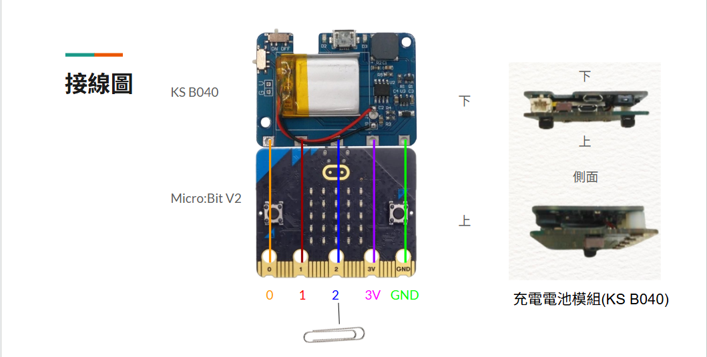

DIY智能家居改造及電腦、手機、平板操作輔具 micro:bit 應用
小飛鼠藍牙穿戴式滑鼠
說明影片
小飛鼠藍牙穿戴式滑鼠-使用情境及說明
📄
Microbit程式下載網址
https://github.com/wen033codes/BT-Wearable-Mouse.git
複製
接線圖

小飛鼠材料
Micro:bit V2 1片
充電電池模組 KS B040 1個
迴紋針 1個
R型端子 1個
母對公杜邦線 1條
組裝方法 :
KS B040充電電池模組
×
小飛鼠使用情境及說明
×
🛠️ 組裝說明與需要材料
主要材料：
Microbit V2、KSB040 電池擴展板、3M 魔鬼氈（用於黏貼 micro:bit 在帽子上）。
micro:bit 與 KSB040 組裝方法：
只鎖
GND
、
3V
、
P0
三個孔。您可以參考影片：
KS B040充電電池模組組裝影片
。
🧭 使用情境說明
使用情境 (一)
滑鼠方向控制
：將 micro:bit + KSB040
平貼在帽沿（水平）
，標誌朝帽緣前方。擺頭即可控制滑鼠游標移動方向。
按鍵控制
：使用
聲控（喊聲次數）
來控制滑鼠左鍵與右鍵。
使用情境 (二)
滑鼠方向控制
：同情境 (一)，透過帽沿的 micro:bit 傾斜度控制游標移動方向。
按鍵控制
：使用
觸碰次數
來控制滑鼠左鍵與右鍵（使用一個迴紋針接到 P0）。
使用情境 (三)
滑鼠方向控制
：
上下左右搖擺
配戴在身上的 micro:bit 控制滑鼠游標移動方向。
按鍵控制
：使用其他外接方式（如吹吸嘴、腳踏板等）來控制滑鼠左鍵與右鍵。吹吸控制可參考「藍牙吹吸滑鼠按鍵」網頁。
💾 程式下載與燒錄
情境 (一) 與 (二)
：需要兩片 micro:bit，皆下載並燒錄
小飛鼠程式
。
情境 (三)
：第一片 micro:bit 下載並燒錄
小飛鼠程式
，另一片 micro:bit 則下載並燒錄
腳踏板程式（版本 2 或版本 3）
或
吹吸程式
。